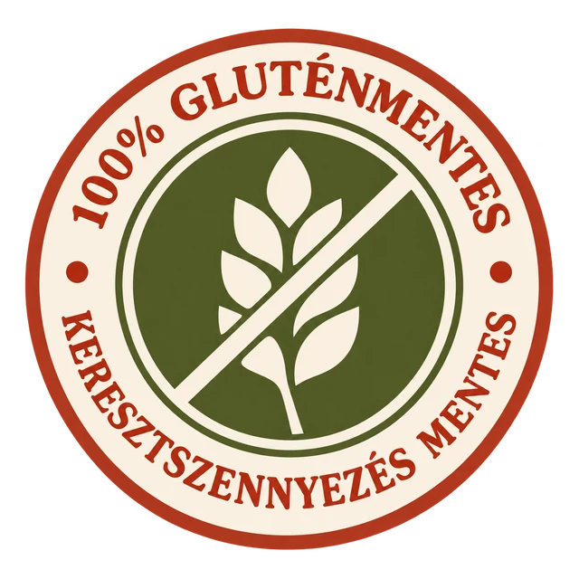
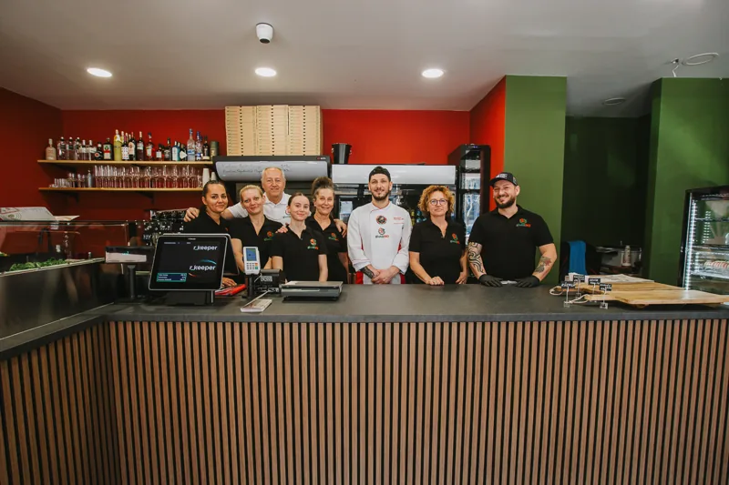
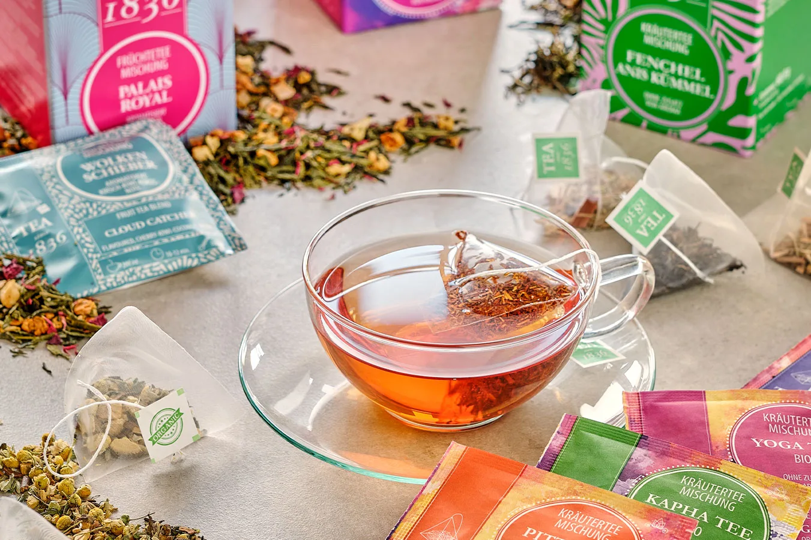
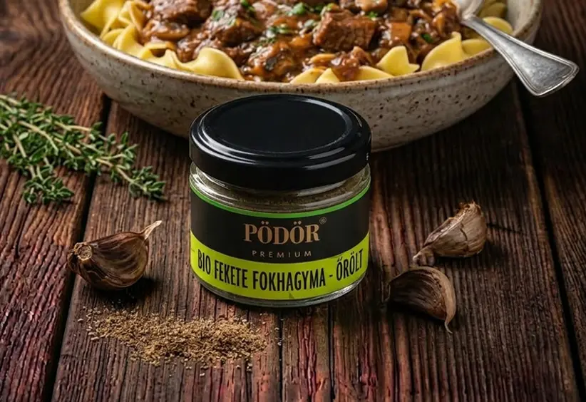
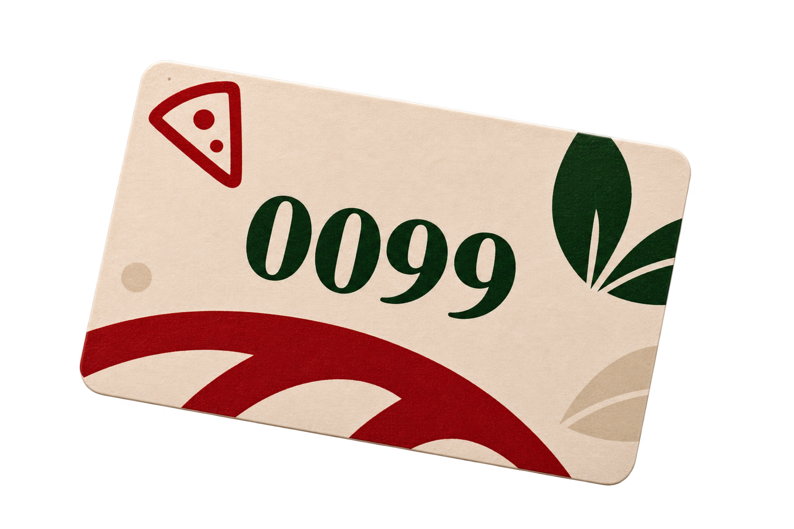

Közös élmény
Pizzáinkról meg sem mondanád, hogy gluténmentesek! Nálunk az egész család ugyanazt a nápolyi pizzaélményt élvezheti, függetlenül attól, hogy ki gluténérzékeny és ki nem. Senkinek sem kell kompromisszumot kötnie.
Felejtsd el a száraz, morzsálódó kenyeret, az ízetlen pizzatésztát és a fanyar sütiket! Nálunk frissen sült nápolyi pizzák, kézműves kenyerek és desszertek várnak, mind gluténmentesen.
Készen állsz a gluténmentes forradalomra?
Bekerültünk a 2026-os 50 Top Pizza Europa Excellent Pizzerias válogatásába! Különösen büszkék vagyunk rá, hogy gluténmentes pizzáinkkal a hagyományos pizzákkal is felvesszük a versenyt!
Elolvasom a cikketEgy pizza, egy friss cipó vagy valami édes? Nálunk minden gluténmentes, de az ízekből nem engedünk. Kattints a képekre, és nézd meg, miből válogathatsz
A jó pizzához idő, tapasztalat és gondosan válogatott alapanyagok kellenek. Mi mindháromra odafigyelünk.
Gluténmentes pizzatésztánkat hosszan érleljük. Pizzáink közepe vékony, abroncsuk roppanós és szépen felhólyagosodott, pont úgy, ahogy egy jó nápolyi pizzának.
Alex, a glutiliNO társtulajdonosa és séfje közel nyolc évet töltött Nápolyban, ahol alaposan megismerte az olasz pizzakészítés hagyományait és fortélyait. Az ott szerzett tapasztalatát ma a glutiliNO gluténmentes pizzáinál kamatoztatja.
Gluténmentes pizzatésztánkat Alex saját receptje alapján készítjük. A feltétekhez használt alapanyagok jelentős része pedig egyenesen Olaszországból érkezik.
Nálunk a gluténmentesség az egész kínálat alapja. A pizzától a frissen sült kenyéren át a desszertig.
Azért dolgozunk, hogy együtt élvezhessétek az olasz konyhát, akár gluténmentesen étkeztek, akár egyszerűen egy finom pizzára vágytok.
Más ételallergiád is van? A gluténmentes nem jelent minden allergéntől mentest. Rendelés előtt egyeztess munkatársainkkal az összetevőkről és az elkészítésről.

Alex szakmai útja és Kinga személyes története egy közös asztalnál találkozott.
Alex a nápolyi pizzakészítés világából érkezett. Kinga személyes kötődése a gluténmentes étkezéshez pedig megmutatta, miért fontos, hogy a jó ételek élményéből senki se maradjon ki.
Ebből a közös gondolatból született meg a glutiliNO: egy pizzéria és pékség, ahol az olasz ízek és a gluténmentes szemlélet természetesen összetartoznak.
Hol találsz minket?
Pizzáinkról meg sem mondanád, hogy gluténmentesek! Nálunk az egész család ugyanazt a nápolyi pizzaélményt élvezheti, függetlenül attól, hogy ki gluténérzékeny és ki nem. Senkinek sem kell kompromisszumot kötnie.
Pizzáink Világ- és Európa-bajnok pizzaséfünk szakmai felügyelete és egyedi technológiája alapján készülnek. Ez nálunk nem tömegtermék, hanem kézműves alkotás.
Kizárólag válogatott, ellenőrzött forrásból származó gluténmentes lisztkeverékekkel és első osztályú feltétekkel dolgozunk. Nálunk nincs „olcsóbb alternatíva”, csak a legjobb.
Ételeink keresztszennyezés mentes környezetben, szigorú szabályok betartásával készülnek. A teljes folyamatot úgy alakítottuk ki, hogy vendégeink valóban biztonságban érezhessék magukat nálunk. Számunkra ez nem extra figyelmesség, hanem alapvetés.
A glutiliNO kínálata nem ér véget az étlappal. A Tea since 1836 prémium teái és a Pödör fűszerei is kaphatók nálunk.

A hamburgi gyökerű Tea since 1836 márka közel 200 éves teakereskedelmi hagyományokra épít. Kínálatában a klasszikus teák mellett különleges teakeverékek is helyet kapnak. A glutiliNO-ban 20-féle prémium Tea since 1836 tea kapható.

A Pödör prémium fűszerei és fűszerkeverékei gondosan válogatott alapanyagokból készülnek. A márka a jól ismert fűszerek mellett különlegesebb ízeket is kínál. A glutiliNO-ban a Pödör fűszereiből és fűszerkeverékeiből is széles választék található.
Nem tudod, mivel lepd meg azt, aki szereti a jó pizzát és az édességeket? A glutiliNO ajándékutalvánnyal biztosan örömet szerezhetsz!
Az ajándékkártyára tetszőleges összeget tölthetsz fel, a megajándékozott pedig maga választhatja ki, mit szeretne megkóstolni gluténmentes kínálatunkból. Legyen szó nápolyi pizzáról, desszertről vagy más finomságról, mindenki megtalálhatja a kedvencét.
Ajándékutalványunk budapesti éttermünkben, a XIII. kerületi Párkány utca 8. szám alatt kapható.
Irány a glutiliNO!
SZÉP-kártyás fizetésre is van lehetőség!
Ünnepnapokon a nyitvatartás változhat. Indulás előtt hívj minket.
A biztos hely érdekében érdemes előre asztalt foglalni, különösen hétvégén. Foglalásokat telefonon, az alábbi számon fogadunk.
+36 30 074 3932